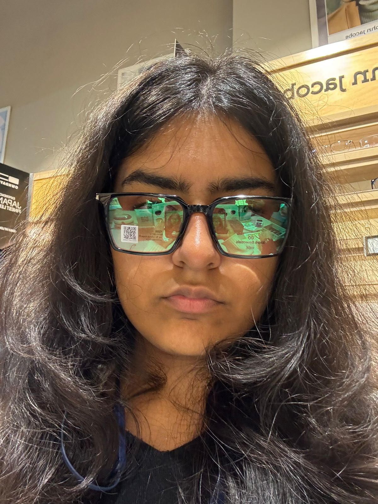
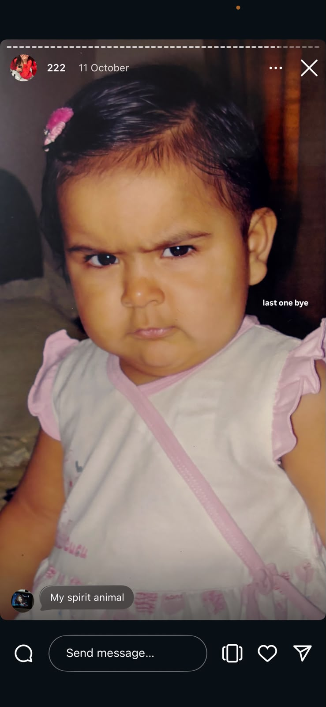

Confidential · Ministry of Aru Affairs
Breaking:
Aru detected.
One (1) unstoppable menace. Two (2) pairs of glasses. Infinite amounts of main-character energy.

too iconic
to handle
APPROVED
Question asked daily by Rishit
Why do we always need to listen to Aru?
→Answer approved by every argument ever
Because Aru is always right.
Current situation report
Aru when Rishit says:
“I have a plan.”
Translation: “Please help. I am under the water. Too much Rishit.”
Exhibit A · dad-joke evidence
I told my wife she should embrace her mistakes.
She gave me a hug.Why don’t eggs tell jokes?
They might crack up.Two jokes in. Aru has already started drafting the “please stop” notice.
Pause the silly channel for a second
I’m sorry, Aru.
I know I can be an idiot sometimes — honestly, a hundred and five times — and I can be impulsive too. But I never intend to hurt or insult you. I know I’ve already made enough mistakes.
I know you have a lot on your plate right now, so please leave all this aside for a bit and just stay happy, bro. My mission right now is simply to make you smile, and this is my attempt.
Now go back to work. Reply to my messages after one week. Chalo, ab jaa.
— Rishit

Live footage from Aru’s brain
Aru hearing me apologise
for the millionth time:
“Bro is not changing ever. I have heard this season before.”
Exhibit B · nobody asked, jokes arrived anyway
What did the big flower say to the little flower?
“Hi, bud!”I went to buy camouflage pants,
but I couldn’t find any.The comedy is so dry that even the chai needs water.
One tiny administrative request
If this made you laugh
even one percent…
…can you forgive this idiot a little bit? No pressure. The button is already panicking.
P.S. The button is shy. Like me when I know I messed up.
Exhibit C · last one, pakka
What did the grape say when it got stepped on?
Nothing. It just let out a little wine.I worked at a calendar factory,
but got fired because I took a couple of days off.Aru’s patience has officially applied for work-from-home.
Breaking news
OMG Aru.
See? It’s you.
Please do not sue the website. It is simply reporting the facts. Mumma dua bhi probably agrees.
Rishit’s final act of foolishness
“Aru, pronounce
Tommy Hilfiger.”
Me after the joke lands: full sprint. Aru’s chappal has entered the chat.
Aru’s official character reveal
When Aru says
“I like cats.”
The cat dossier is now complete. Me: “bas ek cat photo bhej do.” Aru: [entire feline census incoming].
A tiny Aru-only mood reset
Press this if today
needs a little softness.
Standing by with one small smile.
The real point of all this
Whatever the hell
happens, I’ve got you.
On good days, rough days, busy days, and “send a meme immediately” days — I’m in your corner. You deserve steady support, plenty of laughs, and people who want to see you happy.
End of the website. Not the support.
For Aru,
always.
Thank you for being you. Now please take this as your official reminder that you deserve gentleness, laughter, and at least one good snack.